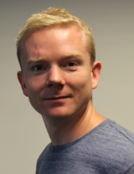

Dr. Annette Cazabuiel
 I am a postdoc working on the capture of droplets by fog nets. The project is funded by the Research Council of Norway (NANO2021). I am also interested in the dynamics of flying seeds. During my PhD at Université de Paris, I performed experiments to study three different types of turbulence: hydrodynamic turbulence, wave turbulence and integrable turbulence.
I am a postdoc working on the capture of droplets by fog nets. The project is funded by the Research Council of Norway (NANO2021). I am also interested in the dynamics of flying seeds. During my PhD at Université de Paris, I performed experiments to study three different types of turbulence: hydrodynamic turbulence, wave turbulence and integrable turbulence.
Dr. Vanessa Kern
 I am a postdoc researching droplet interactions with elastic nano- and micro-porous materials to be used for water harvesting via fog nets, a project funded by the Research Council of Norway.
During my PhD at Cornell University I did experiments on inviscid droplet impacts onto rigid solid surfaces with different configurations, as well as experiments investigating the mobility of the contact line. Some of my other research interests include drop-drop coalescence, drop impact onto soft solids and the forms assumed by vibrating sessile drops.
I am a postdoc researching droplet interactions with elastic nano- and micro-porous materials to be used for water harvesting via fog nets, a project funded by the Research Council of Norway.
During my PhD at Cornell University I did experiments on inviscid droplet impacts onto rigid solid surfaces with different configurations, as well as experiments investigating the mobility of the contact line. Some of my other research interests include drop-drop coalescence, drop impact onto soft solids and the forms assumed by vibrating sessile drops.
Dr. Tak Shing Chan
 I am a researcher interested in problems of wetting dynamic, droplets, capillarity, micro-nano fluidics, dynamics of cell membranes. I use both analytical and numerical methods to study these problems in a project I am leading through the RCN.
I am a researcher interested in problems of wetting dynamic, droplets, capillarity, micro-nano fluidics, dynamics of cell membranes. I use both analytical and numerical methods to study these problems in a project I am leading through the RCN.
Dr. Christian Pedersen
 I am a post-doc student with an interest in phenomena in engineering and biology that is dominated by viscous flows and free surface forces. Prior to this I did my PhD and my MSc in at the University of Oslo with emphasis on fluid mechanics.
Dr. Bharti
I am postdoc working on Dynamic wetting and adhesion on soft solids. The project is funded by the Research Council of Norway and lead by Dr. T. S. Chan. I am interested in studying surface deformation of soft substrates. During my PhD at National Institute of Technology Patna, India, I have analytic background. I used to give mathematical modeling of bacteria and virus. Some of my research interest includes electrophoresis of hydrophobic soft particles and recently surface deformation of soft elastic/viscoelastic substrate. I am focused about analytical methods to study these problems.
Torstein Sæter
 My work is within several topics of fluid mechanics, among them elastohydrodynamic models, and free surface flows.
My PhD focuses on the applications of fluid mechanical models within geoscience, and numerically investigate the fracturing process driven by magma intrusion in the earth's crust.
My academical background is within marine hydrodynamics at NTNU, where I started to find interest in numerical analysis of physical problems. In between finishing the master's thesis and starting on this PhD, I worked one year as a naval architect/structural engineer. PhD is funded through the EarthFlow initiative.
My work is within several topics of fluid mechanics, among them elastohydrodynamic models, and free surface flows.
My PhD focuses on the applications of fluid mechanical models within geoscience, and numerically investigate the fracturing process driven by magma intrusion in the earth's crust.
My academical background is within marine hydrodynamics at NTNU, where I started to find interest in numerical analysis of physical problems. In between finishing the master's thesis and starting on this PhD, I worked one year as a naval architect/structural engineer. PhD is funded through the EarthFlow initiative.
Stephane Poulain
 I am a PhD student with interest in interfacial fluid dynamics and its applications. The focus of my project is poroelasticity in the context of droplet transport, with the aim of developing efficient fog harvesting strategies. It is founded by the Research Council of Norway (NANO2021).
Before joining Oslo University I studied Aerospace Engineering at ISAE-Supaero in France and obtained a Master of Science at MIT where I studied experimentally the physics of surface bubbles and evaporating drops.
I am a PhD student with interest in interfacial fluid dynamics and its applications. The focus of my project is poroelasticity in the context of droplet transport, with the aim of developing efficient fog harvesting strategies. It is founded by the Research Council of Norway (NANO2021).
Before joining Oslo University I studied Aerospace Engineering at ISAE-Supaero in France and obtained a Master of Science at MIT where I studied experimentally the physics of surface bubbles and evaporating drops.
Runepal (Vira) S. S. Dhaliwal
 I am a PhD student interested in the physics of biological systems. My academic background is in engineering and physics, and I have previously worked on fluid mechanics for aerospace applications as well as the transport of small particles in the mammalian cytoplasm.
In my current project I am simulating the self-organisation of proteins during formation of the immune synapse, which is essential for communication between cells in the immune system.
Fluid flow, membrane deformation as well as protein binding and transport are taken into account of in the mathematical model.
I am a PhD student interested in the physics of biological systems. My academic background is in engineering and physics, and I have previously worked on fluid mechanics for aerospace applications as well as the transport of small particles in the mammalian cytoplasm.
In my current project I am simulating the self-organisation of proteins during formation of the immune synapse, which is essential for communication between cells in the immune system.
Fluid flow, membrane deformation as well as protein binding and transport are taken into account of in the mathematical model.
Co-supervised PhD students
Eilif Senem Köksal (PhD student with Dr. Irep Gozen) -- synthetic membranes
Karolina Spustova (PhD student with Dr. Irep Gozen) -- synthetic membranes
Yngve Mardal Moe (PhD student with Dr. Kent-Andre Mardal) -- computational biomechanics
Alumni
Dr. Mathijs Janssen -- post-doc (2020-2022) soft matter/biophysics. Currently Associate Professor (tenured) at NMBU Dr. Blandine Feneuil -- post-doc (2019-2021) complex fluids. Currently Research Scientist (tenured) at SINTEF Dr. Susanne Liese -- post-doc (2017-2020) membrane modelling. Currently at the Max Planck Institute for the Physics of Complex Systems Dr. Rossana M. Rojas -- phd student (2017-2020) diffuso-kinetics of membranes. Phd thesis: "Membrane budding dynamics by diffusion and kinetic recruitment of proteins". Currently at Consigli. Dr. Yuli Wang -- post-doc (2016) droplet impact on structured substrates. Currently at Excillum"
Previous students and visitors
Apolline Faidherbe, M2 student, ESPCI Paris, 2019 Richard A. Fauli, Master Student, three phase flow simulations, 2019 Rasmus N. Tjørstad, Master Student, Friction in cross-country skiing, 2018 Fan Yang, visiting PhD student from Princeton University, 2018 Estella Yu, visiting PhD student from Princeton University, 2018